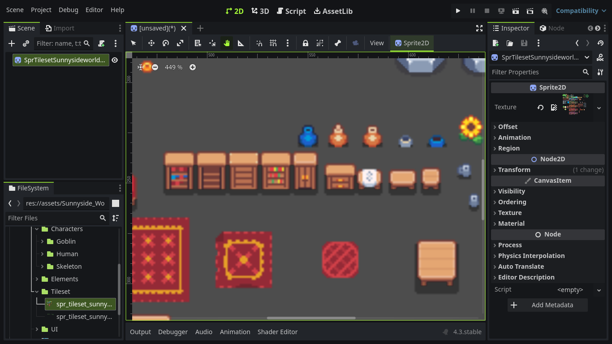
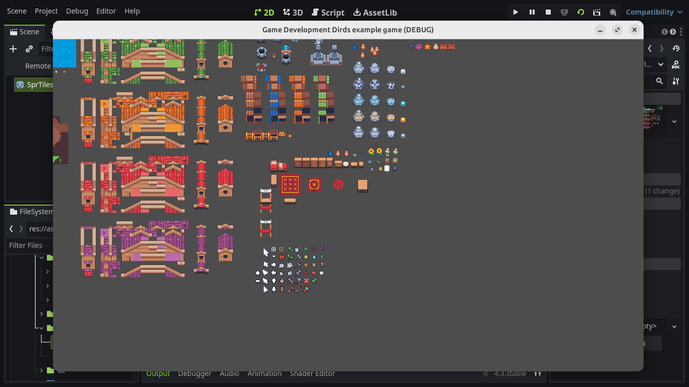

كيفية تجهيز محرك جودوت لمشاريع ثنائية الأبعاد التي تستخدم رسومات فن البيكسل ؟
إذا بدأت تتعمق في تطوير الألعاب ثنائية الأبعاد , وفكرت باستخدام رسومات فن البيكسل ستلاحظ أن شخصياتك ورسوماتك المرئية تبدو ضبابية , مشكلة كهذه ستزيل سحر فن البيكسل البصري , لحسن الحظ , إذا استخدمت إعدادات مشروع صحيحة في محرك جودوت ، يمكنك تحقيق رسومات حادة و جميلة , لكن ما هي هذه الإعدادت ؟ الجواب في الأسفل
مثال عن المشكلة :
 الخطوة 1 : تغيير طريقة معالجة الصور
تغيير طريقة معالجة الصور -rendering في جودوت ليلائم رسومات بفن البيكسل يعتبر أمر سهل , في الاسفل فيديو يوضح كيفية فعل ذلك .
هذه سيحل مشكلة ضبابية الرسومات ويحافظ على حواف حادة لرسومات اللعبة
الخطوة 2 : تحديد حجم شاشة اللعبة
لا تزال نافذة اللعبة غير مناسبة لرسومات بفن البيكسل , يمكنك تعديل حجم نافذة اللعبة إذا أردت من الاعدادات , لكن التحدي يكمن في إيجاد حجم شاشة مناسب للعبتك, لحسن الحظ هناك بعض المعايير التي تساعدك في إيجاد حجم الشاشة المثالي للعبتك , في ألعاب ثنائية الأبعاد بنمط أعلى الأسفل -topdown يعتمد حجم نافذة اللعبة على عدة عوامل :
- إذا كانت لعبتك موجهة لأنظمة تشغيل الحاسوب المعروفة Windows/Ubuntu/MacOS: فإن حجم النافذة الشائع هو مضاعفات رقم 16 (مثل 320 × 180، 640 × 360، 1280 × 720)
- إذا كانت لعبتك موجهة لأنظمة الهاتف المحمول مثل Android/IOS: ستختلف المعايير هنا قليلاً . عليك بالتفكير في نسب العرض والارتفاع الارتفاع مثل 16:9 (على سبيل المثال، 720×405) أو 3:2 (على سبيل المثال، 640×480) , أو بإختصار أختر 1/4 احجم الشاشة الأصلي .
غير ذلك عليك بالتفكير بتصميم اللعبة:
- ما هو حجم الخريطة ؟ : خذ في الاعتبار أبعاد الخريطة المخطط لها وتأكد من أن إطار العرض يعرض بشكل دون التمرير المفرط .
- رؤية اللاعب: حدد مقدار رؤية اللاعب من الخريطة التي من أجل لعب فعال , قد تكون هناك حاجة إلى نافذة عرض أكبر للألعاب ذات الوتيرة الأسرع أو المستويات الأوسع .
- عناصر واجهة المستخدم: احسب المساحة اللازمة لعناصر واجهة المستخدم مثل أشرطة الصحة أو المخزون أو الخرائط المصغرة ، التنظيم أمر مهم .
تذكر أنه لا يوجد قياس واحد مثالي لجميع الشاشات ,اختر حجم نافذة يحقق التوازن بين ألعاب الهاتف المحمول والحاسوب مثل 16:9
لذلك دعنا نختار 180 * 320 مؤقتاً لمشروعنا التعليمي في طيور تطوير الألعاب , أيضاً دعنا نقوم بتغير نوع التمديد لكي يكون لدينا حجم واحد مثالي للعبتنا وأيضاً بتغير وضع المقياس ليلائم فن البيكسل
ملاحظة : مثل ما قلت مسبقاً , لا يوجد قياس واحد مثالي , أنا لدي جهاز لابتوب بشاشة بجودة 786p * 1366 لذلك سإختار حجم شاشة 256 * 455
أمثلة أخرى هي شاشة 1080p ربعها هو 270 * 480
قم بتغيير حجم النافذة ليلائم حجم نافذة جهازك الحالي , لا تقلق كثيراً حول دعم لعبتك لجميع أحجام الشاشات حالياً لانه بامكانك برمجة زر يمنح اللاعب القدرة على تغيير حجم حسب حجم شاشة جهازه
موارد إضافية :
لمزيد من المعلومات حول وضع المقياس والتمديد , راجع هذه الموارد المفيدة :
- وضع المقياس , ما هو هذا ؟ لماذا يجب علي أن اتعلمه ؟ يمكنك معرفة المزيد هنا
- وضع التمديد, ما هو هذا ؟ لماذا يجب علي أن اتعلمه ؟ يمكنك معرفة المزيد هنا
الخاتمة
باتباع هذه الخطوات , يمكنك إعداد محرك جودوت لمشاريع ألعاب بفن البيكسل الخاصة بك , مع ضمان أن تكون رسوماتك حادة وجذابة بصريًا , جرب إعدادات مختلفة واكتشف ما يناسب لعبتك بشكل أفضل , لا تتردد في مشاركة تجاربك أو طرح الأسئلة في التعليقات .
والسلام عليكم و رحمة الله وبركاته . نلتقي في تدوينة أخرى إن شاء الله .